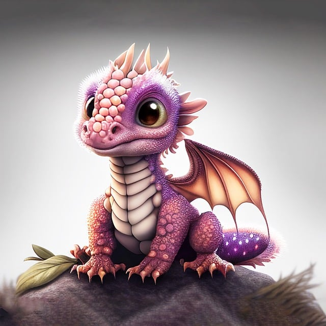

Sparkle is a sweet, pint-sized bundle of magic with shimmering pink scales and bright, curious eyes.
This adorable baby dragon loves cuddles and is always ready to play. Though she’s small, she has a big
heart and a gentle, friendly nature. Perfect for any dragon lover, Sparkle will add a touch of enchantment
and endless joy to your life. Take her home today and let her warm your heart with her tiny fiery puffs and
playful spirit!
Luna is a charming little dragon with soft violet and blue scales that
shimmer like a twilight sky. With her gentle disposition and playful spirit, she’s perfect for
anyone seeking a loyal and magical friend. Luna loves to explore, often chasing after sparkles
and making soft purring sounds when happy. She’s curious, affectionate, and will brighten your
days with her enchanting colors and lovable personality. Bring Luna home and let her fill your
life with a touch of magic and wonder!
Skye is a tiny, heart-melting blue dragon with sparkling scales that
mimic the color of a clear sky. Playful and curious, she loves to flutter around and explore,
often trailing soft wisps of mist behind her. Skye has a gentle, affectionate nature and will
happily curl up in your lap, warming you with her little puffs of breath. Perfect for anyone
looking to add a magical friend to their family, Skye is ready to bring joy, wonder, and her
sweet charm into your life.
Aqua is an irresistibly cute blue baby dragon with shimmering scales
that look like ocean waves. With her wide, curious eyes and gentle personality, Aqua is a little
adventurer who loves to play and explore. She’s known for her soft, melodic purrs and a tiny puff
of mist she lets out when she's extra happy. Perfect for anyone who wants a magical friend with a
gentle heart, Aqua is ready to bring warmth, wonder, and endless joy to your home!